Touch the material, change the film, see what changed
Stack is now a film editor. You mark takes in footage, put them in order, trim the joins while seeing both frames, place figures in a shot and record their movement, hear it, undo anything, and download the film with its sound. This page records the proof: the whole task done through the interface with real WarGames clips, the exported film checked against the preview, and an independent critic's attempt.
What the editor is made of
One film document holds everything, and every view shows it.
- A shot is a take of a source. It has a source clip, an in point and an out point (in the source's own seconds), a sound level, its line of words, and its figures. A figure's times count from the shot's first frame. A shot's length is its out point minus its in point; nothing else stores a length.
- The film is the shots in order. Film time is the sum of the lengths before a shot. The table holds takes kept aside; they keep the same form and do not play.
- Trimming has one rule. Moving an out point moves every later shot. Figures that ran to the old end run to the new end, and recorded movements keep their shot times. A take that runs past the end of its footage is hatched red and holds its last frame.
- Every edit is one step. Pointer, touch, keyboard, voice and camera hands all go through the same actions, and each has a preview, a commit and a cancel (Escape). Each finished manipulation is one undo step with a name; redo is Shift Z. Losing the hand mid-move cancels the move.
- One clock, one evaluator. The preview and the exporter use the same function to decide which shot is under a given time and which source frame to show. Sound runs through one mixer that also feeds the recorder.
| View | What it is for |
|---|---|
| Source (1) | See and hear footage. Drag the top half of the band to scrub, drag the lower half to mark a take, or use I and O. Takes already in the film are shown on the band with their shot numbers. Then Insert, Replace, or To table. |
| Shot (2) | The picture at the playhead. Pick up figures, drag them, size them with the wheel, and drag while it plays to record a path. Layers are shown back to front as chips; "apart" separates them in depth. |
| Table (3) | The film's shots in order, and takes kept aside. Click a tile to audition it. Drag a tile and a green mark shows where it will land before you let go. |
| Film (4) | Only the picture, with the time and shot number. Click to play or pause; Esc returns to editing. |
| The strip | The sequence, always under the picture. Each shot is as wide as it is long and has its waveform. Drag a shot to reorder it (the insertion bar and a label show the result first). Drag either edge to trim, which shows the last outgoing frame beside the first incoming frame. After every move or trim the changed join plays from 1.5 s before to 1.5 s after. |
The proof scene, run through the interface
A script drove the editor with real mouse and keyboard input on three WarGames clips that have sound, and recorded the session on video. Results are measured from the editor's state or from the exported file. The rows below come from the final run, after the critic's repairs.
| Step | What was done | Measured result | |
|---|---|---|---|
| 1 | Opened three clips. Marked a take from 003 by dragging the band, from 009 by scrubbing and pressing I and O, and from 289 by dragging. Inserted each. | Takes 003 0.60–3.60, 009 1.13–4.13, 289 0.77–3.57. Film 8.80 s. | done |
| 2 | Played the sequence with sound. | Mixer running. 52 of 76 samples taken during playback carried sound (RMS up to 0.096). | done |
| 3 | Dragged the middle take to the end. | Before release the insertion bar and "shot 2 → the end" were shown. Order changed from 003, 009, 289 to 003, 289, 009, and the new join played. | done |
| 4 | Dragged shot 1's out point to the left. | The last frame of shot 1 and the first frame of shot 2 were shown side by side with source times. Out point 3.60 → 2.97; film 8.80 → 8.17 s; the join played. | done |
| 4b | Started a trim and pressed Escape. | Unchanged; no history step added. | done |
| 5 | Added a figure to shot 2 and dragged it while the film played. | 16 keys recorded. Recording stops at the shot's last frame. | done |
| 6 | Went to the Table view and back. Undid, then redid. | The selected shot, the selected figure and the playhead were the same before and after. Undo took the path from 16 keys to 1; redo restored 16. The status line named the step undone. | done |
| 7 | Saved the project file, reloaded the page, replayed, exported. | The film after reload was identical to the film before it, and to the project file. The export is VP9 video with Opus sound, 7.93 s against the editor's 8.17 s, mean level −26.7 dB. | done |
Does the exported film agree with the preview?
At six times inside the three shots, the preview frame drawn by the paused editor was compared with the nearest exported frame. The difference to the matching preview was 0.6–3.3 grey levels out of 255. The difference to frames from other shots was at least 9.1. Exported frames land within two frames of the preview's timing.
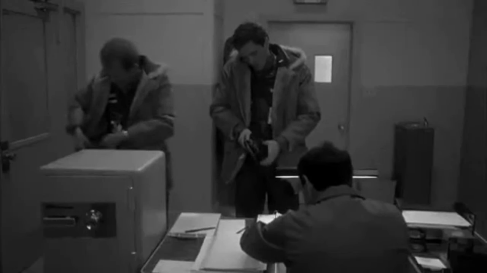
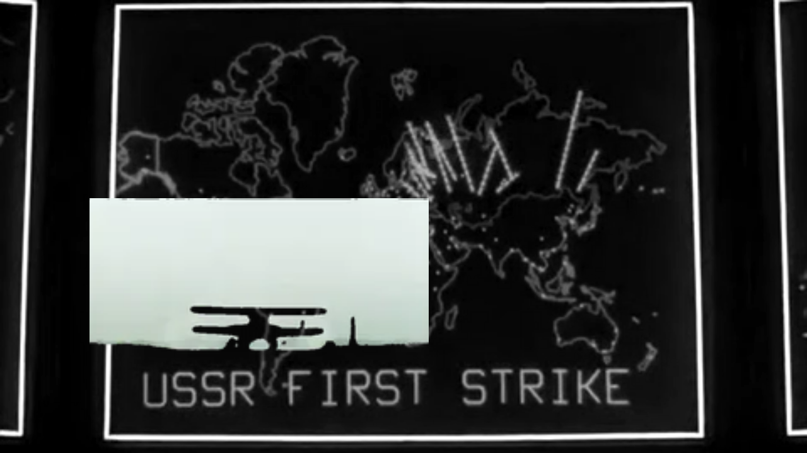
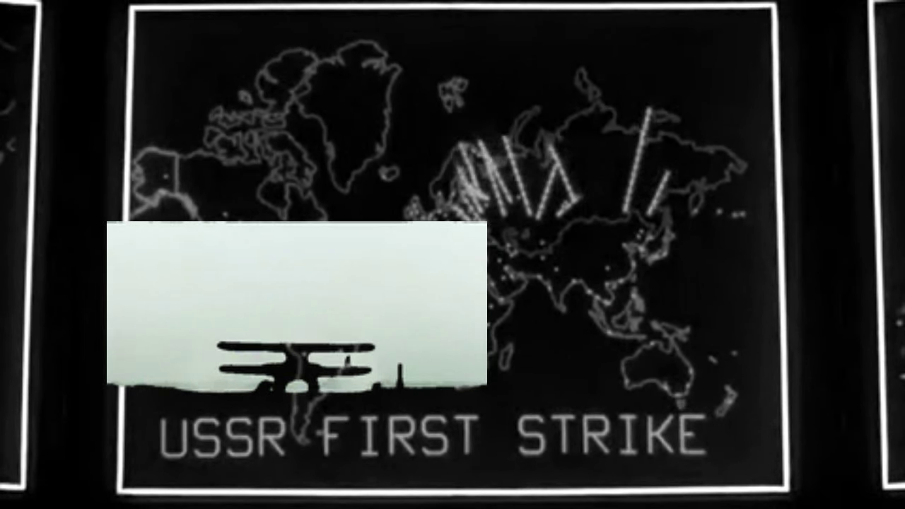
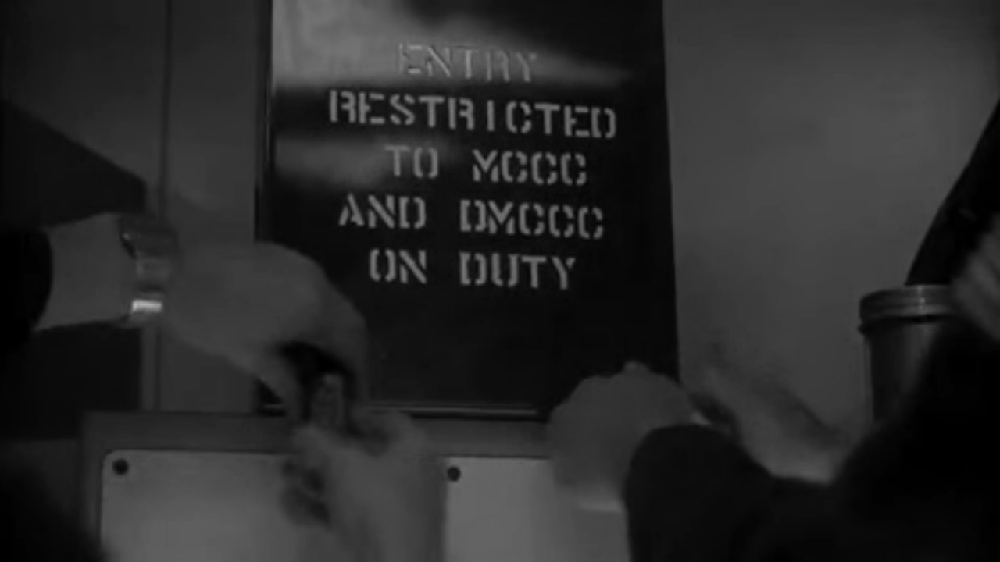
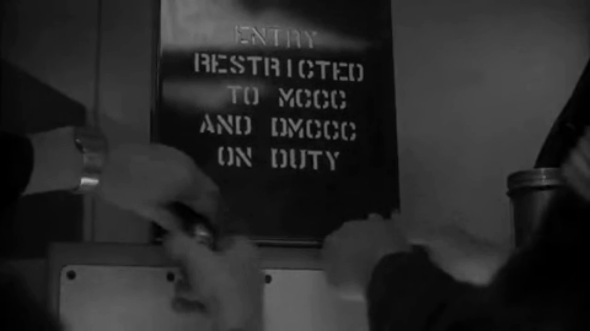
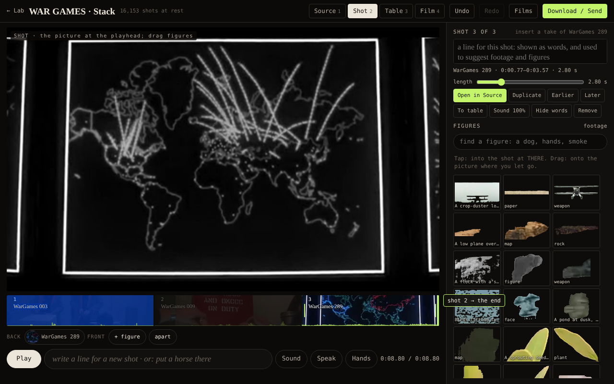
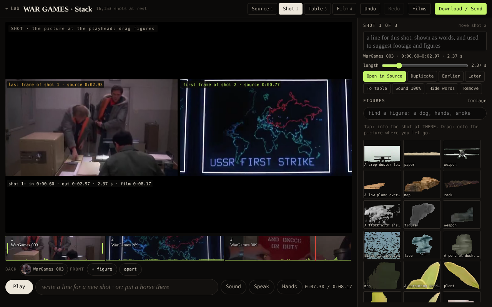
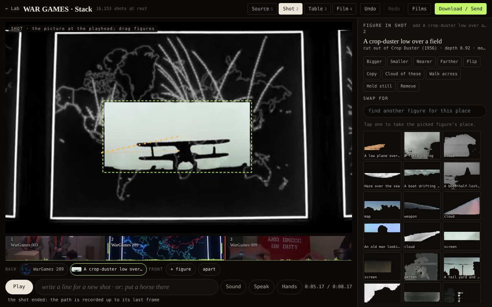
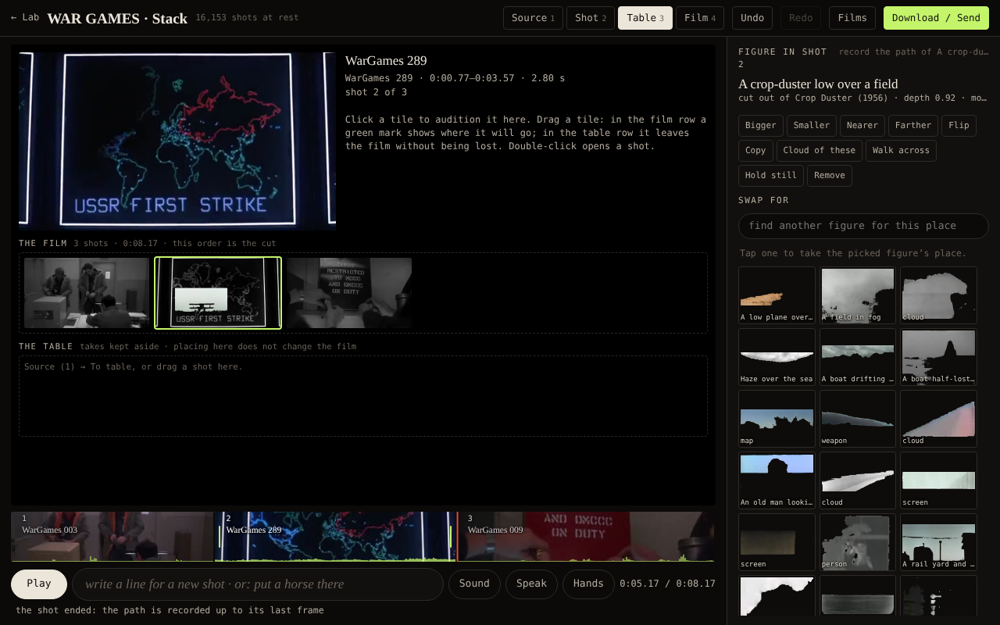
Independent critic
A separate agent was given the editor and the seven-step task and no explanation of the controls. It drove the page with mouse and keyboard and read state only to check results. Its verdict: PASS. Its account, shortened:
- It marked takes with the band and with I and O, which it found from the tooltips. It played the film; sound was measured at the mixer and in the export (mean −36.0 dB, max −6.2 dB).
- Reorder showed a green insertion bar and "shot 2 → the end". Escape cancelled the drag with "cancelled: move shot 2". The new join played.
- Trim showed "the last frame of shot 1 at source 0:02.27 beside the first frame of shot 2 at 0:01.13, plus in 0:00.90 · out 0:02.30 · 1.40 s · film 0:05.27". It called this "excellent".
- Selection and playhead survived the Table view. Undo and redo named the action. Order, trim and figure path survived a reload. The export frames matched the preview in order, trim and moving figure.
What it found wrong, and what was done
| Finding | Repair | |
|---|---|---|
| Largest failure. Footage that fails to load fails silently: "loading the footage…" stays forever, the ruler assumes 10 seconds, and you can mark a take past the clip's real end. | Footage that cannot play now says so on the picture and on its tile. The band shows no length until the footage reports one. Marking and inserting are disabled until then. Out points are held to the real length. The critic's repair condition was checked on an unplayable clip: the message appears, the buttons are disabled, and no length is invented. | repaired |
| Recording a path carried on into the next shot, so the figure disappeared mid-gesture. | The clock now stops at the shot's last frame while the hand is still down, and the status line says the path is recorded to the end. | repaired |
| On a phone, Undo and Redo were not shown at all. | Undo and redo buttons are shown in the panel on phones. | repaired |
| After a reload the playhead went to 0 and the selection to shot 1. | The selected shot and the playhead are saved with the film and restored. Undo history still starts empty after a reload. | repaired |
| The Film view showed no time or shot position. | It now shows the time, the length and "shot N of M". | repaired |
| A disabled main button still looked active. | Disabled buttons are grey. | repaired |
| Saving the project file sits under Download / Send; Ctrl S does nothing. The film also saves itself in the browser. | Not changed. | open |
| The Shot and Film views are black and white while Source, the trim view and the strip are in colour. | Not changed. Black and white is a setting of the film ("Colour" on the footage chip). Source and trim show the footage as it is. | open |
After the repairs the whole proof was run again, and every row in the table above passed.
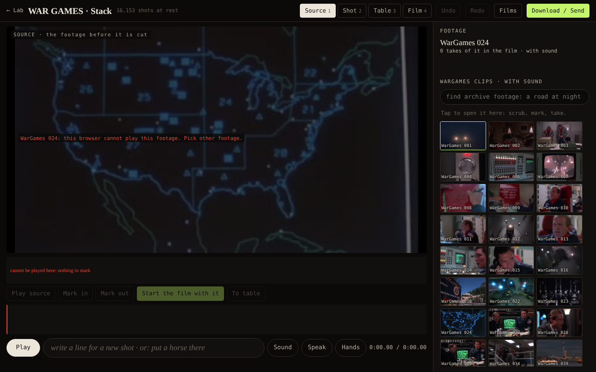
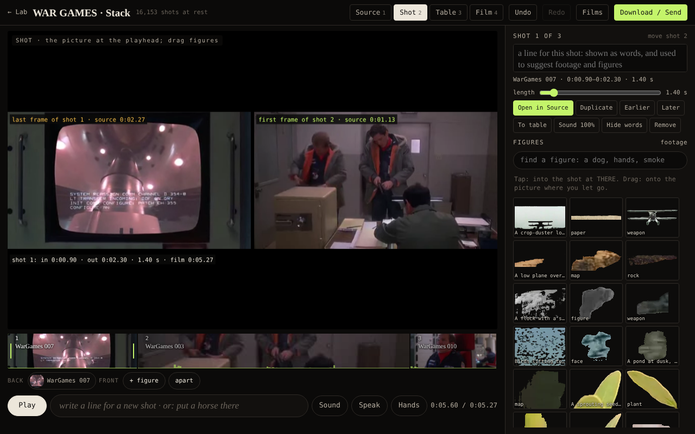
Running it, formats, limits
- Launch. Open wg-stack.html in a desktop browser (Chrome, Edge or Firefox). It opens on Source with the WarGames clips. Films → "The WarGames demonstration" loads a three-shot film. The editor is a single page built from
source/film.template.htmlwithpython3 build.py. - Formats verified. The project file is JSON (format 3, which also reads the earlier format 2). A link carries the whole project in its address. The export is WebM with VP9 video and Opus sound at 1280×720, recorded in real time while the film plays.
- Tested. Headless Chromium at 1280×800 and 390×844, using VP9 copies of the WarGames clips, because the test browser cannot decode H.264. The scripts are in
source/:proof.pyruns the scene andcompare.pychecks the export. - Frame rate of the export. In the test browser the export reached about 10–19 frames a second, because that browser draws in software. On a normal computer it records at the display's rate; this was not measured here.
- Not tested. The microphone and camera hands (no devices here). Archive footage and the word reader, which need network access this test did not have. "Send a link" on a phone. H.264 playback, which real browsers do. Nobody has listened to the sound; it was measured.
- Archive footage. Clips from the archive's video host play, but if that host does not allow a page to record its pictures, the export shows the shot's still or its title in its place. The editor says so when you export.
- Still to do. Sound is cut hard at every join (no fades, no separate sound track). Takes cannot overlap, and there is no retiming.
Source: film.template.html, build.py, proof.py, compare.py · steps measured: steps.json · frame comparison: compare.json